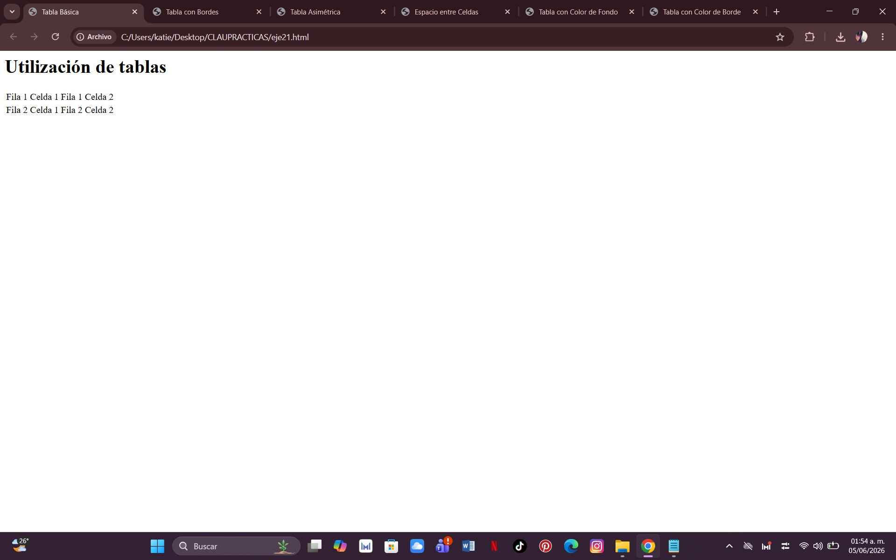
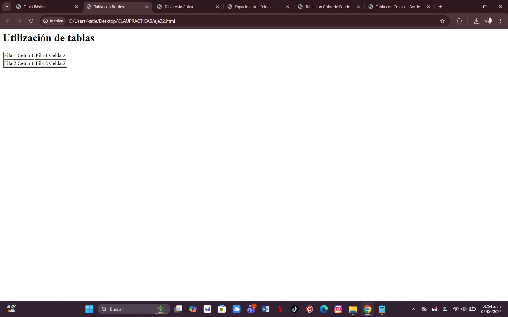
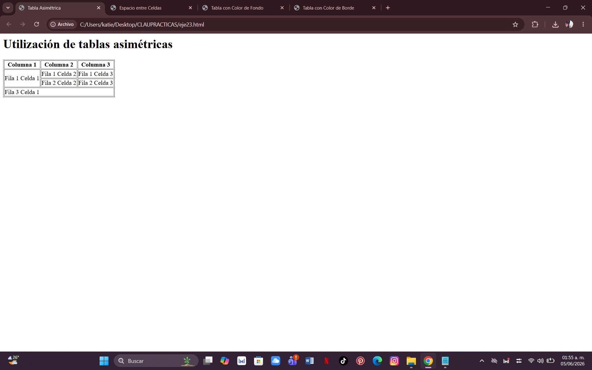
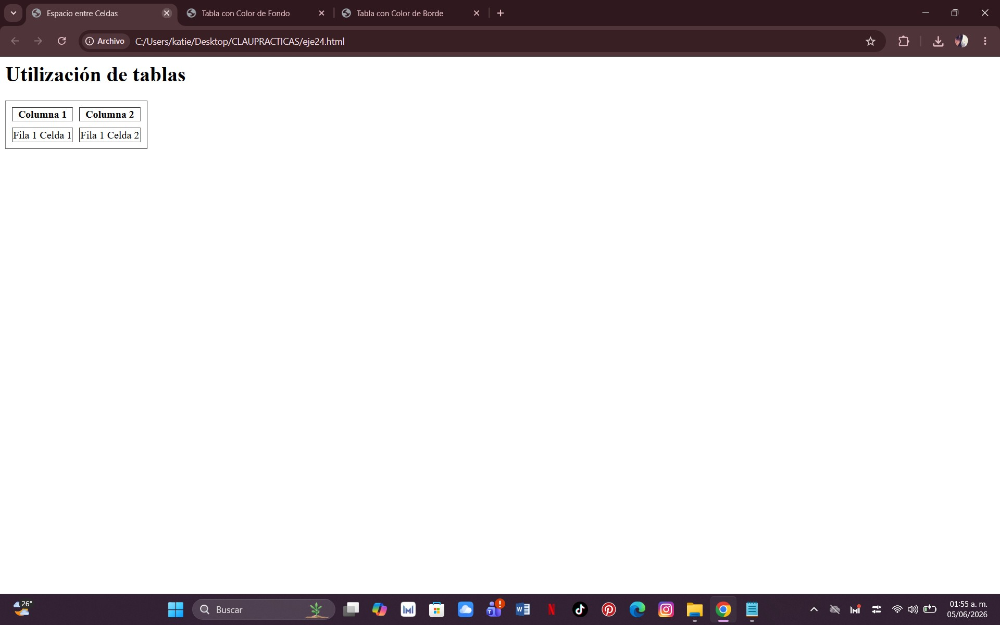
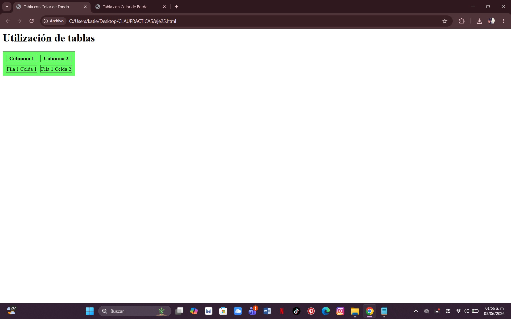
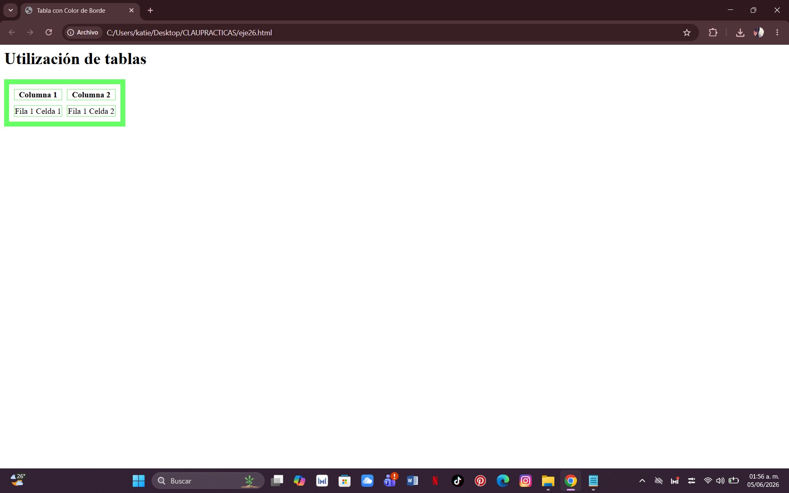

¿Qué se hizo?
Se creó una tabla básica compuesta por filas y columnas para organizar información de forma estructurada.
Comando utilizado:
table, tr y td

¿Qué se hizo?
Se agregó un borde visible a la tabla para diferenciar cada una de las celdas.
Comando utilizado:
table border

¿Qué se hizo?
Se combinaron filas y columnas para crear una tabla con una estructura diferente a una tabla tradicional.
Comando utilizado:
rowspan y colspan

¿Qué se hizo?
Se agregó separación entre las celdas para mejorar la presentación visual de la tabla.
Comando utilizado:
cellspacing

¿Qué se hizo?
Se cambió el color de fondo de la tabla para mejorar su apariencia.
Comando utilizado:
bgcolor

¿Qué se hizo?
Se modificó el color y grosor de los bordes de la tabla.
Comando utilizado:
border y bordercolor